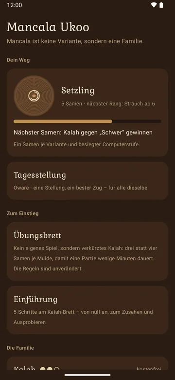
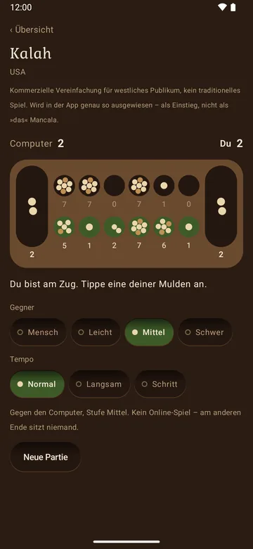
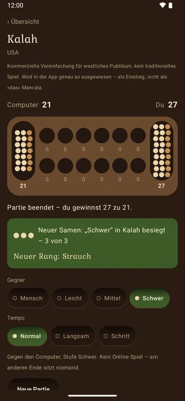
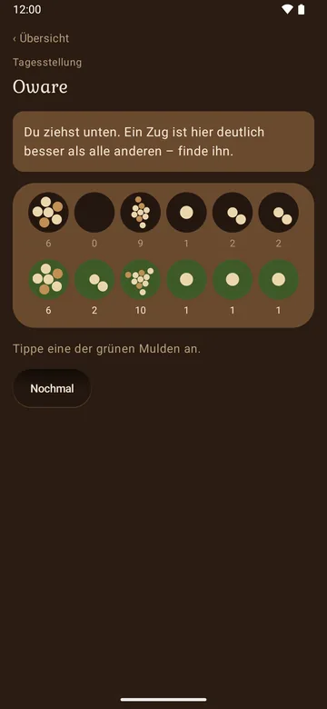
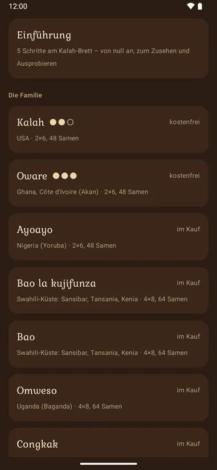
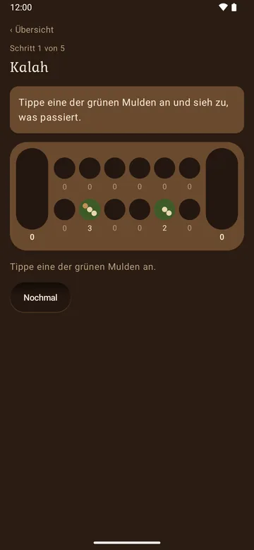

Neugierige
Sie kennen Mancala als Kalah – oder gar nicht. Die Einführung beginnt bei null, und mit Kalah und Oware stehen das Vertraute und das bekannteste traditionelle Spiel gratis nebeneinander.
Mancala ist keine Variante, sondern eine Familie. Elf ihrer Spiele unter ihren echten Namen – mit Regeln, die belegt sind, nicht geglättet.
Für Android-Handys und -Tablets ab Android 8 sowie für iPhone und iPad.
Kalah zum Ausprobieren, im Browser, zu zweit. In der App spielen Sie auch gegen den Computer.
Säen, zählen, fangen: Samen wandern Mulde für Mulde über das Brett. Wie man gewinnt, regelt jedes Spiel anders – meist zählt, wer mehr Samen gesammelt hat; bei Bao, Omweso und Igisoro gewinnt, wer als Letzter noch ziehen kann.
Die Einführung führt in fünf Schritten am Kalah-Brett durch das erste Spiel – erst zusehen, dann selbst ziehen. Das Übungsbrett ist ein verkürztes Kalah für eine Partie in wenigen Minuten.
Drei Spielstärken, oder zwei Spieler an einem Gerät. Kein Online-Spiel: Am anderen Ende sitzt niemand, und die App behauptet es auch nicht.
Für jedes weitere Spiel zeigt die App, was anders ist als bei Kalah – mit gestellten Aufgaben zum Ausprobieren, bevor die erste Partie beginnt.
Zu jedem Spiel steht in der App, woher es stammt, welcher Überlieferung gefolgt wird und auf welche Quelle sich die Regeln stützen. Wo Überlieferungen sich widersprechen, sagt die App, welcher Sie folgen.
Kalah wurde 1955 in den USA patentiert und ist eine Vereinfachung für westliches Publikum. Die App weist es genau so aus: als Einstieg, nicht als „das“ Mancala. Oware folgt der Turnierfassung Abapa – mit Fütterpflicht: Wer den Gegner nicht mehr ziehen lässt, muss ihm Samen geben. Man gewinnt durch Sammeln, nie durch Aushungern.
Samen überdecken sich nie: Wie viele in einer Mulde liegen, ist die wichtigste Information des Spiels – deshalb steht die Zahl auch unter jeder Mulde.
Jeder Sieg gegen eine neue Computerstufe bringt einen Samen – einen je Spiel und Stufe. Mit den Samen wachsen die Jahresringe:
Tagesstellung: Jeden Tag eine Stellung in Kalah oder Oware, ein bester Zug, für alle dieselbe. Ohne Serien, ohne Erinnerungen – spielen Sie, wann Sie wollen. Ein Rang, einmal erreicht, bleibt.






Sie kennen Mancala als Kalah – oder gar nicht. Die Einführung beginnt bei null, und mit Kalah und Oware stehen das Vertraute und das bekannteste traditionelle Spiel gratis nebeneinander.
Sie wollen Bao mit seinen zwei Phasen, Omweso auf vier Reihen oder Igisoro aus Ruanda spielen – nach einer genannten Quelle statt nach erfundenen Regeln.
Ein Gerät, zwei Spieler: das Handy oder Tablet als Brett zwischen sich, ohne Steine zu suchen und ohne zu verzählen.
Kein Banner, kein Video, keine Energie, keine Truhen. Kein Abo. Was kostet, ist ein einziger, einmaliger Kauf.
2,99 €
Einmalig. Öffnet die neun weiteren Spiele: Ayoayo, Bao la kujifunza, Bao, Omweso, Congkak, Sungka, Dakon, Endodoi und Igisoro.
Preis in Deutschland, Stand Oktober 2026. Verbindlich ist der Preis, den Google Play oder der App Store beim Kauf anzeigt.
Nein. Gespielt wird ganz ohne Verbindung. Internet nutzt die App ausschließlich für Käufe über Google Play – außerhalb eines Kaufvorgangs überträgt sie nichts.
Nein, und das ist Absicht. Sie spielen gegen den Computer oder zu zweit an einem Gerät. Wir geben keinen Computergegner als Menschen aus.
Ja, seit Oktober 2026 auch im Apple App Store, mit allem, was die Android-Fassung kann.
Nein. Kein Nutzerkonto, keine Werbung, keine Tracker. Was Sie spielen, bleibt auf Ihrem Gerät. Die Einzelheiten stehen in der Datenschutzerklärung.
Nein. Der Kauf hängt an Ihrem Google-Konto. Ist auf dem neuen Gerät dasselbe Konto angemeldet, übernimmt die App ihn beim Start von selbst.
Deutsch, Englisch, Spanisch, Französisch, Portugiesisch, Arabisch, Hindi, Indonesisch, Polnisch und Russisch. Die Übersetzungen sind maschinell erstellt und nicht von Muttersprachlern geprüft – das sagt die App auch selbst.
Das kommt vor: Regionale Überlieferungen widersprechen sich teils. Die App nennt zu jedem Spiel ihre Quelle. Wenn Sie eine andere kennen, schreiben Sie uns an kontakt@wunderkammer-apps.de.
Kalah und Oware gratis, ohne Werbung, ohne Konto.